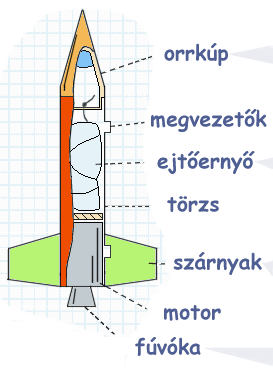

Az alábbi ábra egy rakétamodell alapvető szerkezeti elemeit szemlélteti. Természetesen lehetnek egy rakétának más részei is, ez az oldal azonban csak a hibátlan működéshez szükséges és elégséges komponenseket mutatja be. A baloldali linkekre kattintva az egyes részek részletesebb leírása érhető el.
|  | ||||
| - | a rakéta légellenállását csökkenti, hogy könnyebben törjön előre a levegőben és ezáltal gyorsabban és magasabbra repüljön. A pálya csúcsán az orrkúp leválik, hogy az ejtőernyő kicsúszhasson a törzsből. |
|||
| - | a rakétát a kilövőállványon tartják a fellövés első pillanataiban, megadva a helyes repülési irányt. A kilövőállvány elhagyásakor szerepük véget ér. |
|||
| - | a rakéta épségben való visszatérését biztosítja. Az ejtőernyő a pálya csúcsán kell kinyíljon és a rakéta minden részét vissza kell hoznia a földre. |
|||
| - | a rakéta szerkezeti elemeit tartja össze, kívülről a szárnyak és a megvezetők, belsejébe pedig a motor rögzítődik. Az orrkúp és az ejtőernyő nincsenek fixen a törzshöz fogatva. |
|||
| - | a rakéta stabil repülését biztosítják, hogy végig a megadott pályán haladjon, lehetőleg egyenes vonalban. Oldalirányú széllökés esetén a szárnyak korrigálják a röppályát. |
|||
| - | a rakéta fellövéséhez szükséges tolóerőt szolgáltatja. |
|||
| - | az üzemanyag égési energiáját alakítja át tolóerővé. Bár a fúvóka a motor része, fontossága miatt külön fejezet foglalkozik vele. |
|||